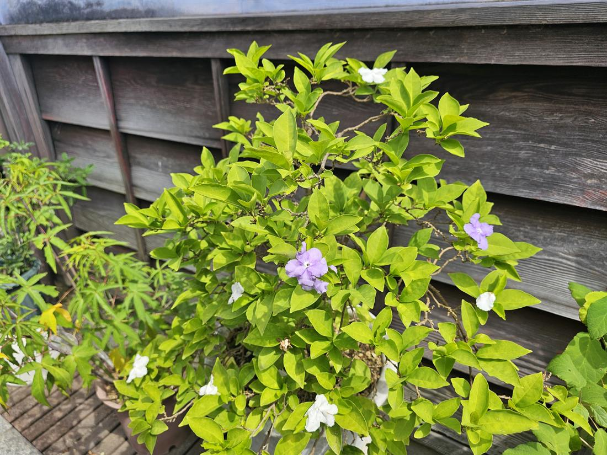

ニオイバンマツリ（匂蕃茉莉）
Brunfelsia australis Benth.
別名 · ブルンフェルシア／英名 yesterday-today-and-tomorrow（昨日・今日・明日）
ナス科 · Solanaceae（ブルンフェルシア属）
燻太さんの好きなお花淡い紫と白のコントラスト……じつは、同じ花の「今日」と「一昨日」
学名・和名の由来
- Brunfelsia（ブルンフェルシア）＝ドイツの植物学者オットー・ブルンフェルス（Otto Brunfels, 1488頃–1534）にちなむ。写生にもとづく植物図譜を出した「植物学の父」の一人。→ No.003 スイレンボクの属名 Grewia（植物解剖学の父グルー）と同じ、人名をもらった属名の仲間。
- australis（アウストラリス）＝ラテン語で「南の」。オーストラリアではなく南アメリカ原産（ブラジル南部〜アルゼンチン）を指す。
- 和名匂蕃茉莉＝「蕃（外国の）」＋「茉莉（ジャスミン）」＋「匂」＝外国から来た、ジャスミンのように香る花。ただし本物のジャスミンはモクセイ科で、この子はナス科＝血縁は別。香りが似ているだけの“他人の空似”で付いた名前。
この植物のこと
- 色が変わる花——咲いた日は濃い紫、翌日はうすい紫、最後は白。3〜4日かけて色がぬけていく。花は次々と開くので、一本の木に紫と白が混ざって咲いているように見える。
- つまり写真の紫の花と白い花は、別の種類でも別の品種でもなく、同じ花の「今日」と「一昨日」。英名 yesterday-today-and-tomorrow（昨日・今日・明日）はここから。一本の木のなかに、時間が並んでいる。
- なぜ色がぬけるのか：花びらのアントシアニン（青紫の色素）が咲き進むにつれて減るため。No.004 ランタナの「七変化」と同じく、送粉者への蜜サインと考えられる。白＝「もう蜜がないよ」、紫＝「こっちが新しいよ」。それでも古い花を落とさないのは、株全体を大きく見せて遠くから虫を呼ぶ看板にするため。捨てずに使いきる、賢い咲き方。
- ランタナはクマツヅラ科、この子はナス科。科がまったく違うのに、同じ「色を変える」答えにたどりついている＝収れん。No.024 シモツケで見た「花序の形の収れん」に続く、図鑑で2つめの収れん。
- 香りは夕方から夜に強くなる。甘い、ジャスミンに似た香り。夜に強く香る花は夜行性のガに受粉を頼っていることが多い。→ 同じ木に朝と夕方の2回会うと、香りがちがう。
- ナス科＝No.001 トマトと同じ科。図鑑のいちばん最初の子と親戚どうし。
- ⚠有毒。アルカロイド（ブルンフェルサミジン等）を含み、実や種子を犬が食べて中毒する事故が知られる。きれいだけれど口に入れない・ペットを近づけない。